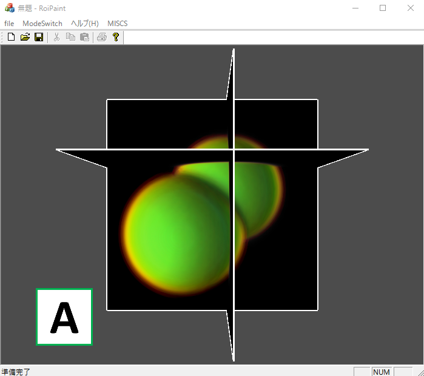
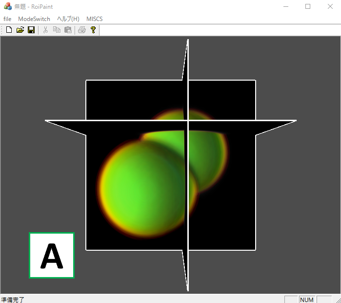
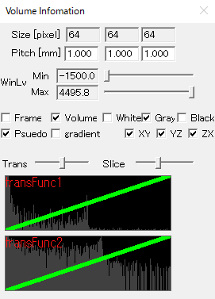
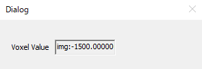
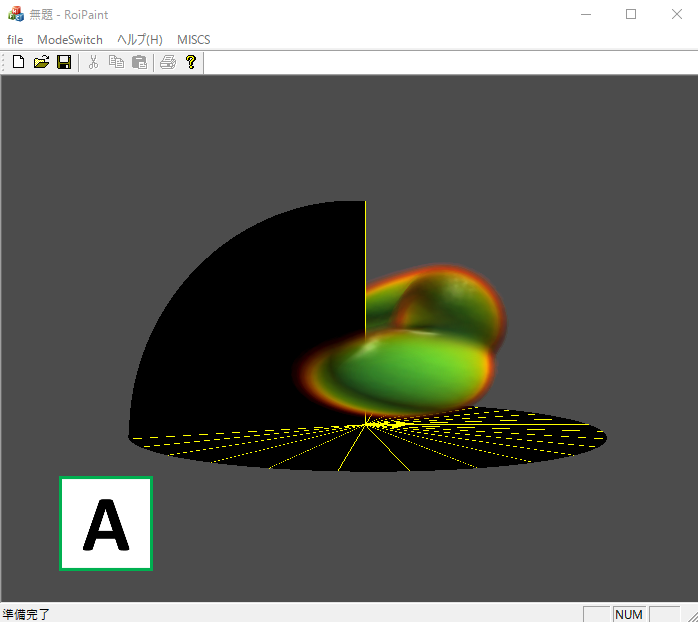
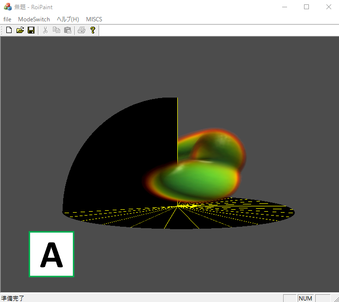
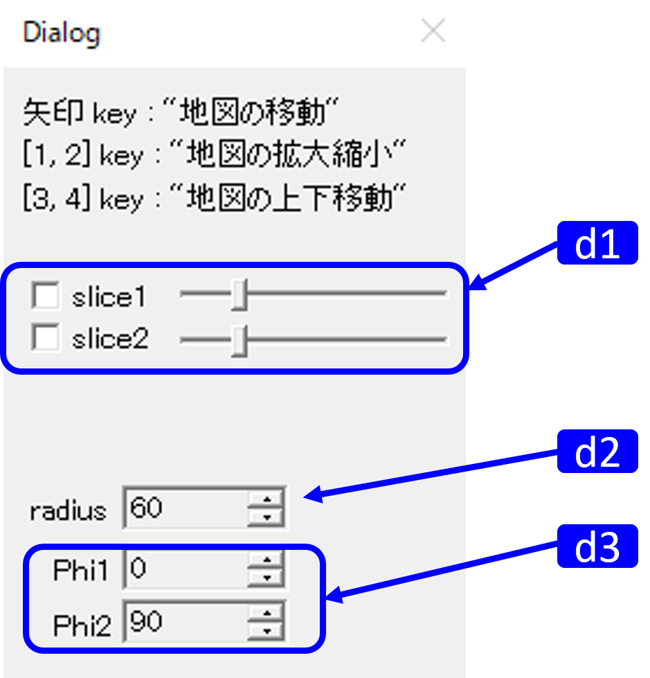
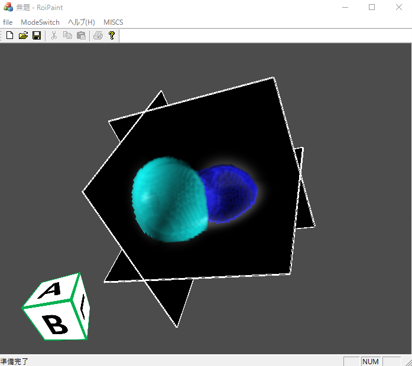
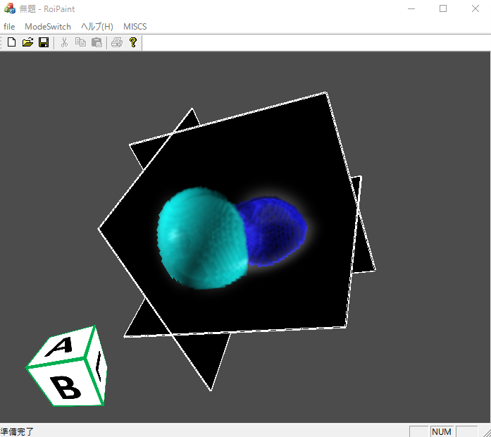
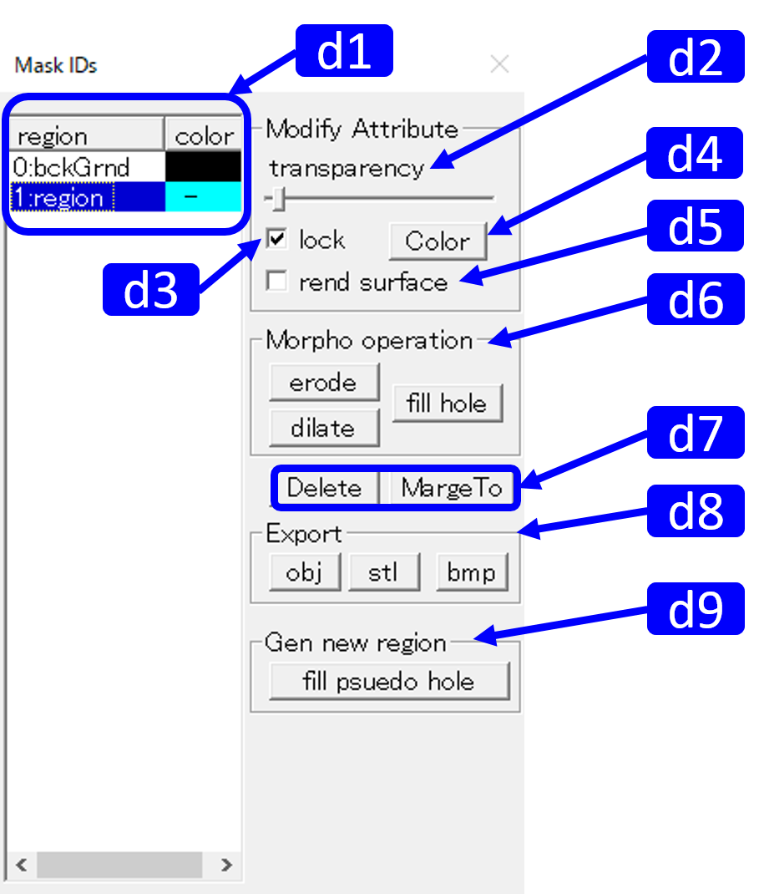

RoiPainter Visualization

RoiPainter I/O Visualization Segmentation source code (github)
Visualization in RoiPainter
RoiPainterでは，3つのVisualizationモードが使用可能です．
起動 : Click "Menu > ModeSwitch > to start visualization mode"
起動 : Click "Menu > ModeSwitch > to start visualization mode"
Visualization Normal
基本のVisualizationモード．入力データをそのまま観察する．


|  |
Size 固定 Pitch スライスの間隔 WinLv Frame 枠の表示 Volume 3次元モデルの表示 White/Gray/Black 背景色の変更 Psuedo 疑似モデルの表示 gradient 勾配の表示 XY/YZ/ZX 各平面のスライスの表示 Trans slider psuedoの透明度設定 Slice slider transFunc1 L-dragで操作 transFunc2 L-dragで操作 ＊このダイアログはすべてのモード共通です． |
|  |
Voxel Value マウス位置の輝度値を表示 |
Visualization Polar Cordinate
気象データ用のVisualizationモード．


|  |
d1. slice1/2 スライスの表示（check）と変更（slider） d2. radius 底面の半径の変更 d3. Phi1/2 slice2の角度の下限/上限 |
Visualization Mask
マスクしたデータを見るためのVisualizationモード．Storeしたデータをまとめて見ることができる．抽出した部位ごとに色を変えるなどして可視化できる．


|  |
d1. Mask list 保存したマスクの情報 d2. Transparency slider 透明度設定 d3. Lock check box d4. Color botton マスクの色変更（Color） d5. Rend surface Surfaceの描画 d6. Morpho operation d7. Delete/Marge region マスクの削除とマージ d8. Export 出力 d9. Gen new region |